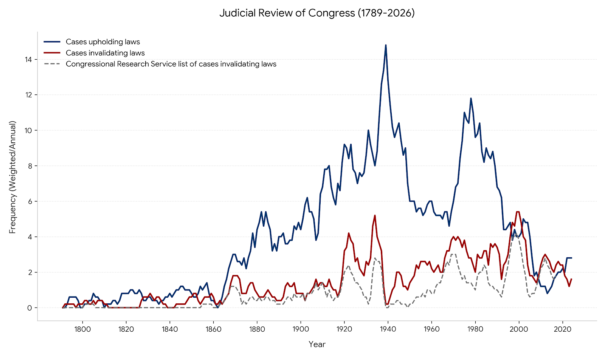

Judicial Review of Congress Database
1789–2022
1789–2022
The Judicial Review of Congress dataset catalogs all the cases in which the U.S. Supreme Court has substantively reviewed the constitutionality of a provision or application of a federal law. The dataset aims to be the most comprehensive accounting of Supreme Court cases both upholding and invalidating provisions of federal statutes.
The database currently includes 1,323 cases decided by the Court from its founding through its October 2021 term and related pieces of information about those cases. Methodology for identifying cases can be found in the appendix to Repugnant Laws: Judicial Review of Acts of Congress from the Founding to the Present (University Press of Kansas, 2019).

Figure 1: Trends in Judicial Review of Congress. This chart tracks the frequency of cases where the U.S. Supreme Court substantively reviewed federal laws, comparing the original dataset (upholding/invalidating) with the Congressional Research Service list.